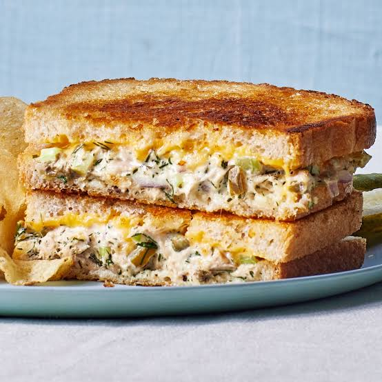

Mix 1 can of drained tuna, 2 tablespoons of mayonnaise, 1 teaspoon of lemon juice, salt, and pepper in a small bowl until combined. Spread the tuna mixture onto two slices of bread, layer with 2 tomato slices and 1 slice of cheese, then toast the sandwich in a skillet with 1 teaspoon of melted butter until the cheese melts.